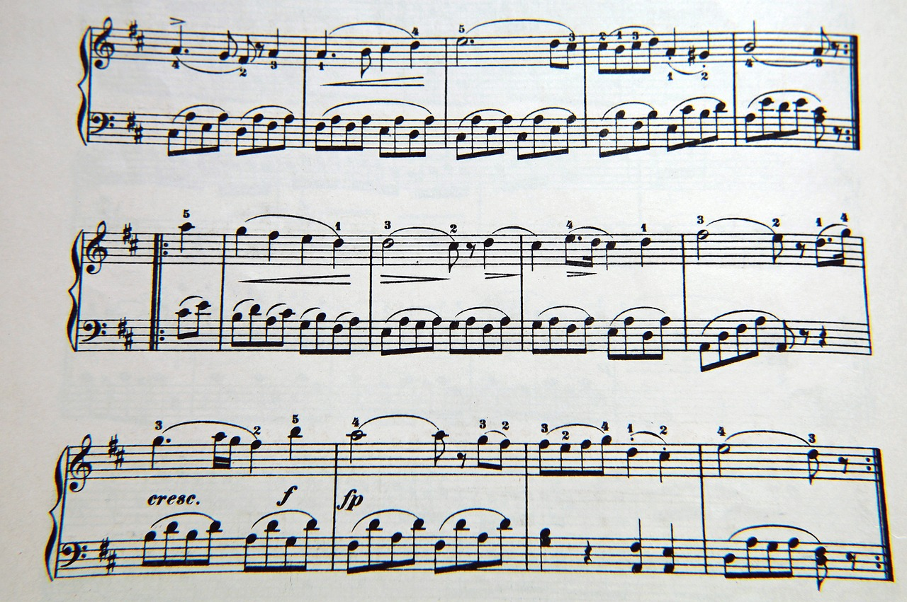

<!DOCTYPE html>
<html>
    <head>
        <title>Eveie_assignment_02</title>
        <meta charset="UTF-8">
        <link rel="stylesheet" href="css/style.css">
        <link rel="preconnect" href="https://fonts.googleapis.com">
<link rel="preconnect" href="https://fonts.gstatic.com" crossorigin>
<link href="https://fonts.googleapis.com/css2?family=Carrois+Gothic&family=IBM+Plex+Mono:ital,wght@0,400;0,600;0,700;1,100;1,200;1,300;1,400;1,500;1,600;1,700&family=Tangerine:wght@400;700&display=swap" rel="stylesheet">

    </html><link rel="preconnect" href="https://fonts.googleapis.com">
    <link rel="preconnect" href="https://fonts.gstatic.com" crossorigin>
    <link href="https://fonts.googleapis.com/css2?family=Carrois+Gothic&family=IBM+Plex+Mono:ital,wght@0,400;0,600;0,700;1,100;1,200;1,300;1,400;1,500;1,600;1,700&family=IBM+Plex+Sans+Condensed:ital,wght@0,100;0,200;0,300;0,400;0,500;0,600;0,700;1,100;1,200;1,300;1,400;1,500;1,600;1,700&family=Tangerine:wght@400;700&display=swap" rel="stylesheet">
    </head>
    
    <body>
        <header>
            <h1 class="border"> Bass Vs. Treble Clef</h1>
    <div class="navbar">
        <nav>
            <a href="index.html">Home</a>
            <a href="layout&seating.html">Layout/Seating</a>
            <a href="treble&bassclef.html">Treble Vs. Bass</a>
            <a href="instruments.html">Instruments</a>             
        </nav>
    </div>
    
    </header>
        <section>
            <div>
                <h2 class="border2">What Is A Clef</h2>
                <p>For basics, a Clef is, the indentifier that specifies the type of sound an instrument will produce as well as the pitch of the music. depending on what type of scale an instrument is built for is what will determine the octive and clef of said instrument in which the music will be written.</p>
            </div>
            <div>
                <h2 class="border2">Where can a clef be found?
                </h2>
                <p>a clef will always be found at the beginning of each line of music as seen below. you can identify the clef as the little curly symbol at the beginning of each line. the top one can be indentified as the Treble clef and the bottom can be identified as the bass clef.</p>
                <div></div>
            </div>
        </section>
        <section>
            <div>
                <h2 class="border2">What's The Difference?</h2>
                <P>The difference between the two clefs may not be entirely noticable at first however lets take a closer look. if you notice the bottom lines of msuic, are very repetitive. vs the top often changes and flows. this is because the treble instruments is often the part of the band that carry the melody while the bass is what provides a beat.  </P>
            </div>
            <div class="grid-parent">
                <div>
                <div></div>
                <p>This is a Bass Cleff</p>
            </div>
            <div>
                <div></div>
                <p>This is a Treble Clef</p>
            </div>
            </div>
        </section>

        <section>
            <div>
                <h2 class="border2">The Treble Clef</h2>
                <p>
                    The treble clef is also known as the "G clef" due to the beginning of this clef curling around the seconf line of the musical staff also known as the G line. the treble clef is used for higher sounding notes, and if you look at it from a piano perspective it's usually on the right hand side of the keyboard.
                </p>
                <div class="grid-parent"></div>
                <p>Some instruments that use the treble clef, Are the flute Oboe, Violin, and Trumpet. another level deeper we can clarify that certain ranges of voices also use the treble clef when singing, such as the Saprano being the highest, the Alto being second highest, and the Tenor being the lowest range on the treble clef</p>
            </div>
        </section>
        <section>
            <h2 class="border2">The Bass Clef</h2>
            <p>Similar to the Treble the Bass clef is also a musical symbol that demonstrates pitch. also known as the "F Clef" because it curls around the forth line of the staff which is the F line, the Bass clef is used for lower sounding notes and if you again look at it from a piano perspective the bass notes will be seen on the left hand side of the instrument.</p>
            <div class="grid-parent"></div>
            <p>Some instruments that use the bass clef can be seen as the, Double Bass, Bassoon, Trombone, and Tuba. further more the voice ranges that use this are classified as Baritone as the highest and Bass as the lowest.  </p>
        </section>
        

        </footer>
    </body>
</html>